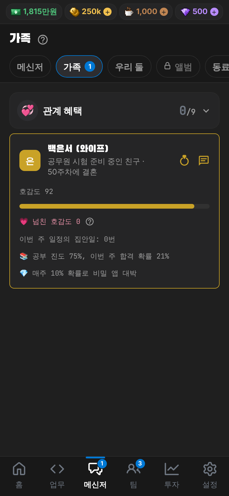
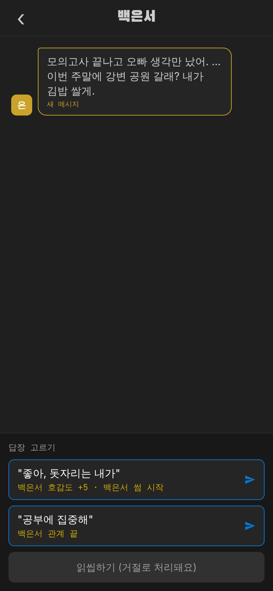

백은서 공략
칭호 「키다리 아저씨」 전용 히로인 은서. 공부 진도·합격 확률, 두 결혼 엔딩을 고르는 법
공무원 시험을 준비하는 친구. 늘 돈에 쪼들리지만 기죽지 않아요. 처음부터 「오빠」라고 불러요.
- 칭호 「키다리 아저씨」를 낀 회차에만 나와요.
- 돈을 주면 공부 진도만 오르고 호감도는 그대로예요. 호감도는 「곁에 있어 주는」 답으로만.
- 결혼 엔딩이 2개: 후원 안 하고 빨리 결혼하면 「자기야 나 성공했어」(시뮬레이션 86.0%), 후원 최대 + 결혼을 늦추면 「합격 통지서와 결혼반지」(43.3%).
- 청혼에 3,000만 원이 필요해요. 청혼 시점에 통장에 없으면 끝! 💸
은서는 칭호 스토리와 묶인 특별한 히로인이에요. 밥값·인강비·월세를 보태 주면 시험공부가 빨라지고, 그 진도가 엔딩을 갈라요. 그리고 그녀에겐 아무도 모르는 비밀이 하나 있어요… 🤫 공통 규칙은 여기.
만나는 조건#
| 항목 | 조건 |
|---|---|
| 칭호 | 「키다리 아저씨」 장착 (평범한 개발자·만년 대리·귀농 개발자 엔딩 중 하나를 보면 열려요) |
| 회사 | 상관없음 |
| 시작 호감도 | 20 (7명 중 가장 높아요) |
| 썸 전 속도 | 0.74 (가장 빨라요) |
| 칭호 마일스톤 | 강변 데이트 → 연인이 되다 → 결혼 → 은서의 비밀 |
호감도 올리는 법: 돈 메시지 vs 마음 메시지#
은서의 호감도는 마음 메시지에서 「곁에 있어 주는」 답으로만 올라요. 돈을 보내는 답은 공부 진도만 올리고 호감도는 그대로예요. 둘을 헷갈리지 않는 게 은서 공략의 전부예요.
💸 돈 메시지 (공부 진도만, 거절해도 벌점 없음)#
| 메시지 | 언제 | 답 | 공부 진도 |
|---|---|---|---|
| 컵밥 1개로 버티는 중 | 썸 전·썸 | 고기 -5만 원 / 김밥 -1만 원 / 거절 | +3 / +1 / 0 |
| 인강 패스 결제일 | 3주~, 결혼 후에도 | 전액 -80만 원 / 반 -40만 원 / 거절 | +8 / +4 / 0 |
| 월세가 밀렸어 | 6주~, 썸 전·썸 | 생활비 -150만 원(스트레스 +2) / 월세만 -50만 원 / 거절 | +10 / +4 / 0 |
💗 마음 메시지 (호감도)#
| 메시지 | 언제 | 좋은 답 | 호감도 | 거절 답 |
|---|---|---|---|---|
| 모의고사 또 망했어 | 2주~ | 일을 미루고 바로 달려간다 (체력 -20, 스트레스 +20, 성과 -6) | +3 | -8, 성과 +6 |
| 독서실 옆자리 비었어 | 4주~ | 밤 11시까지 옆에 있어 준다 (체력 -30, 스트레스 +30) | +3 | -8, 코딩력 +6 |
| 행정법 문제 불러 줘 | 6주~ | 2시간 동안 불러 준다 (체력 -20, 스트레스 +20, 집중력 -12) | +3 | -8, 평판 +5 |
| 떡볶이, 지갑 두고 왔다 | 연애 중 | 당연히 내가 산다 (-3만 원) | +2 | 반반 +1 |
여기에 일상 대사(썸 전 24종·썸 21종·연애 19종·결혼 22종)와 공통 썸·연애 메시지가 섞여 와요. 그녀가 합격하거나 비밀이 밝혀지면 돈·마음 메시지와 일상 대사는 멈춰요.
은서도 1주에 1통이라, 돈 메시지가 오면 그 주엔 호감도 메시지가 안 와요. 돈 메시지를 거절해도 벌점이 0이니, 후원하지 않는 루트라면 망설이지 말고 거절하세요. 단 읽씹은 -15예요(답은 꼭!).
공부 진도와 합격 확률#
진도는 아무리 돈을 써도 「일정 상한」을 넘지 못해요. 혼자서도 매주 +0.5씩 올라요.
| 주차 | 10 | 30 | 50 | 60 | 65 | 70 | 80 |
|---|---|---|---|---|---|---|---|
| 진도 상한 | 11.7 | 35 | 58.3 | 70 | 77.5 | 85 | 100 |
| 진도 | 70% | 75% | 80% | 85% | 90% | 95% | 100% |
|---|---|---|---|---|---|---|---|
| 매주 합격 확률 | 5% | 20.8% | 36.7% | 52.5% | 68.3% | 84.2% | 100% |
가족 탭에 「📚 공부 진도 ○%, 이번 주 합격 확률 ○%」로 바로 보여요.

썸 → 고백 → 연애#
- 썸 초대 (80)「이번 주말에 강변 공원 갈래? 내가 김밥 쌀게.」 → 「좋아, 돗자리는 내가」 (마일스톤 「강변 데이트」)
- 고백 (100)「나 오빠 좋아해. 사귈래?」 → 「나도 좋아해」. 「조금만 더 생각해 볼게」는 -15에 고백이 다시 안 와요.

결혼 조건#
- 청혼 (데이트 진도 60 + 호감도 100)「그래, 결혼하자」는 -3,000만 원. 「조금만 더 있다가 하자」는 -15, 다시 안 와요.
돈이 모자라면 「결혼하자」를 고를 수 없고, 남은 답은 거절뿐이에요. 청혼이 다가오면(연애 시작 후 데이트 60번) 통장을 꼭 확인하세요. 회차 보너스 「부모님 지원금」(시작 잔고 최대 +1,800만 원)이 큰 도움이 돼요.
엔딩 전부#
은서 엔딩은 결혼 엔딩 2개뿐이고 한 회차에 둘 중 하나만 나와요. 연애 엔딩(date-)과 동거 · 신혼 · 취향 엔딩은 없어요. 어느 쪽이 되는지는 은서의 비밀과 관련돼 있어서 아래에 접어 뒀어요.
스포일러: 은서의 비밀과 두 결혼 엔딩
은서는 공부하면서 몰래 인강 앱을 만들고 있었어요. 결혼 6주 뒤부터, 시험에 합격하기 전까지 매주 10% 확률로 「자기야 나 성공했어…」 고백이 와요. 그 뒤로 매주 주급만큼(최소 100만 원) 용돈이 들어오고(맞벌이와는 중복 안 돼요), 엔딩은 「자기야 나 성공했어」가 돼요.
반대로 합격이 먼저면 비밀 고백은 오지 않고, 결혼하면 「합격 통지서와 결혼반지」예요. 결혼한 뒤 합격했다면 그다음 주부터 은서의 공무원 주급(내 주급의 25%)이 더해져요. 합격 → 결혼 순서도 OK예요.
병가·번아웃으로 쉬는 주에는 비밀 고백·합격 판정이 모두 쉬어요.
- 조건
- 은서와 결혼 → 결혼 6주 후부터 합격 전까지 매주 10%로 앱 대박 고백 → 100주차에 결혼 중
- 보상
- 에픽 카드팩 1
- 조건
- 은서가 시험 합격(진도 70%부터) + 은서와 결혼(청혼 3,000만 원) → 100주차에 결혼 중
- 보상
- 전설 카드팩 1
결혼 주차별 결과 — 후원 없음 (실제 함수 20,000회)#
후원을 안 하면 진도는 매주 +0.5뿐이라 100주차에도 50 안팎, 합격은 불가능해요. 그래서 결과는 「앱 대박이 언제 터지느냐」로만 갈려요.
| 결혼 주차 | 55 | 60 | 65 | 70 | 80 | 85 | 90 | 95 |
|---|---|---|---|---|---|---|---|---|
| 앱 대박 엔딩 | 98.4% | 97.6% | 95.7% | 92.8% | 80.0% | 65.2% | 40.7% | 0% |
실제 회차 시뮬레이션 (엔진 그대로)#
| 플레이 | 판 수 | 결혼 | 앱 대박 | 합격 결혼 |
|---|---|---|---|---|
| 후원 없음 · 데이트 주 4번 · 지원금 3단계 | 150 | 74주 | 86.0% | 0% |
| 후원 최대 · 데이트 주 3번 · 지원금 3단계 | 90 | 81주 | 57.8% | 30.0% |
| 후원 최대 · 데이트 주 2번 · 지원금 3단계 | 90 | 95주 | 3.3% | 43.3% |
| 후원 없음 · 데이트 주 4번 · 지원금 없음 | 30 | 0% (청혼 때 약 1,780만 원) | 0% | 0% |
돈 메시지는 은서의 「주 1통」 칸을 나눠 써서 한 회차에 몇 번(중앙값 4번) 안 와요. 그래서 후원을 최대로 해도 진도는 100주차에 70 안팎이고, 합격 판정이 시작되는 게 80주 이후예요. 결혼을 늦게(90주대) 해서 비밀 고백 판정이 돌기 전에 합격을 기다리는 것이 합격 결혼의 핵심이에요.
추천 공략 루트#
스포일러: 엔딩별 추천 루트와 시뮬레이션 성공률
A. 「자기야 나 성공했어」 (쉬움)#
- 준비「부모님 지원금」 3단계 추천(청혼 3,000만 원 대비).
- 돈 메시지는 전부 거절(벌점 0). 진도가 낮을수록 합격이 비밀보다 먼저 오지 않아요.
- 마음 메시지는 전부 좋은 답, 썸·연애 중 데이트 주 4번.
- 청혼 74주쯤 3,000만 원으로 「그래, 결혼하자」. 결혼 후 집안일 매주 1번 이상.
시뮬레이션(150판, 부모님 지원금 3단계, 데이트 주 4번): 썸 47주, 연애 59주, 결혼 74주, 앱 대박 엔딩 86.0%, 나머지는 은서 엔딩 없이 끝.
B. 「합격 통지서와 결혼반지」 (전설 카드팩)#
- 돈 메시지는 진도를 가장 많이 주는 답을 고르되, 통장에 3,000만 원은 항상 남겨 두기.
- 진도 상한은 60주에 70%지만, 실제로는 돈 메시지가 드물어서 70%에 닿는 건 80주 이후예요. 진도 70%부터 매주 합격 판정.
- 데이트를 주 2번으로 줄여 결혼을 90주대로 늦춰요. 비밀 고백은 결혼 6주 뒤부터라, 그 전에 합격하면 합격 결혼 확정이에요. 합격이 결혼보다 먼저여도 괜찮아요.
시뮬레이션(90판, 부모님 지원금 3단계, 후원 최대, 데이트 주 2번): 합격 42.2%(중앙값 90주), 결혼 95주, 합격 결혼 엔딩 43.3%, 앱 대박 3.3%.
예전 공략(10월)의 「청혼은 연애 진도 20」 「합격 결혼 21%」는 지금 규칙과 달라요. 지금은 청혼까지 데이트 진도 60이 필요해서 결혼이 늦어지고, 결혼 시점을 데이트 횟수로 조절하기가 쉬워졌어요(위 시뮬레이션 기준 합격 결혼 최대 43.3%).
동거 · 신혼 · 육아#
은서는 동거·신혼·취향이 없어요(꿈의 집도 없어요). 연애 엔딩(date-)도 없어서, 100주차에 사귀기만 하고 결혼하지 않으면 은서 엔딩은 없어요. 아기는 다른 히로인과 같은 조건(결혼 15주 + 집안일 29번 + 넘친 호감도 30)이 맞으면 제안이 올 수 있지만, 결혼이 늦어서 시뮬레이션에서는 150판 중 6%(100주차에)만 아기를 봤어요(아기 이름 은우).
실패 · 이별 조건#
| 상황 | 결과 |
|---|---|
| 칭호를 다른 것으로 바꿈 | 은서 메시지가 안 와요(칭호 회차 전용) |
| 「공부에 집중해」(썸 초대 거절) | 은서 떠남 |
| 고백 「조금만 더」 / 청혼 「조금만 더」 | -15, 다시 안 옴 |
| 청혼 때 3,000만 원 없음 | 거절밖에 못 골라요 → 결혼 불가 |
| 결혼 뒤 합격보다 「그 일」이 먼저 일어남 | 합격 결혼 엔딩 불가(내용은 위 「은서의 비밀」 스포일러) |
| 그 밖의 공통 규칙 | 서윤 공략의 표 |
자주 묻는 질문#
- 돈을 많이 주면 호감도도 오르나요?
- 아니요. 돈 메시지는 공부 진도만 올려요. 호감도는 모의고사·독서실·행정법 메시지의 「곁에 있어 주는」 답으로 올라요.
- 진도 100%면 바로 합격이에요?
- 그 주 판정에서 100% 합격이에요. 단 진도 상한 때문에 80주 전에는 100%가 될 수 없어요.
- 합격한 뒤에도 결혼할 수 있나요?
- 네. 합격 후에도 청혼은 와요(호감도 100 + 데이트 진도 60). 이 순서면 비밀 고백이 아예 안 와서 합격 결혼 엔딩이 확정이에요.